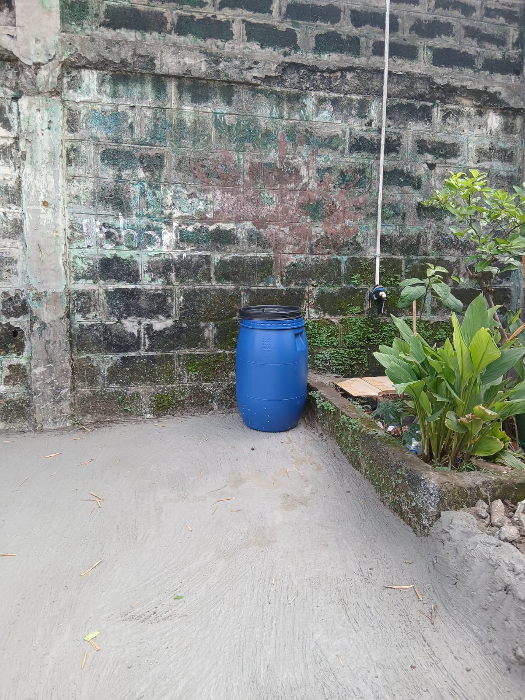
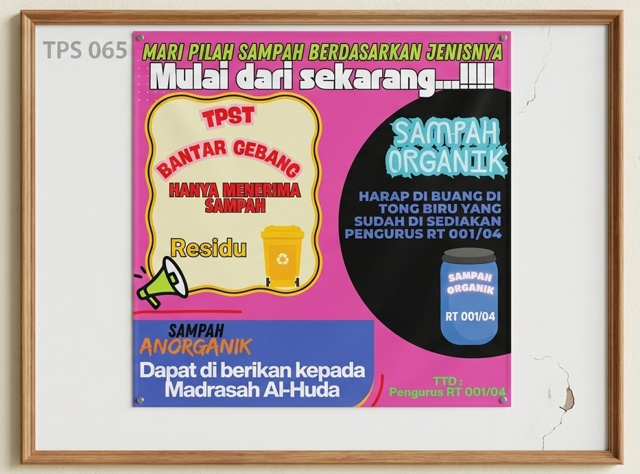
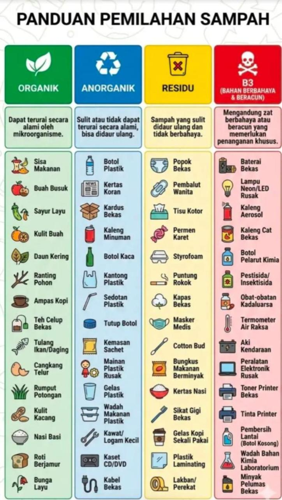
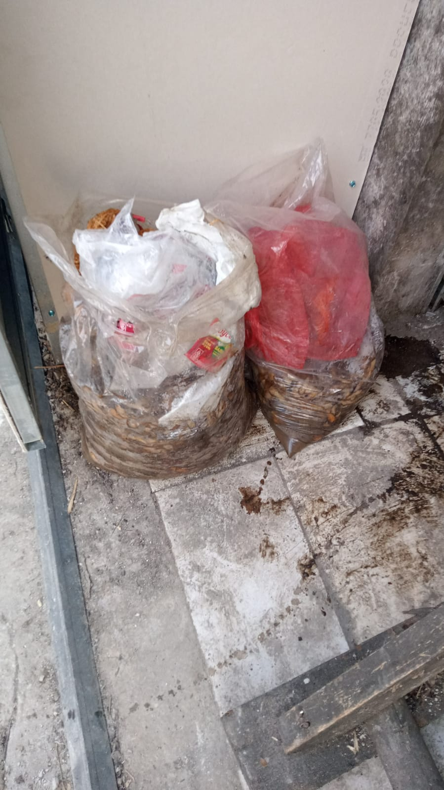
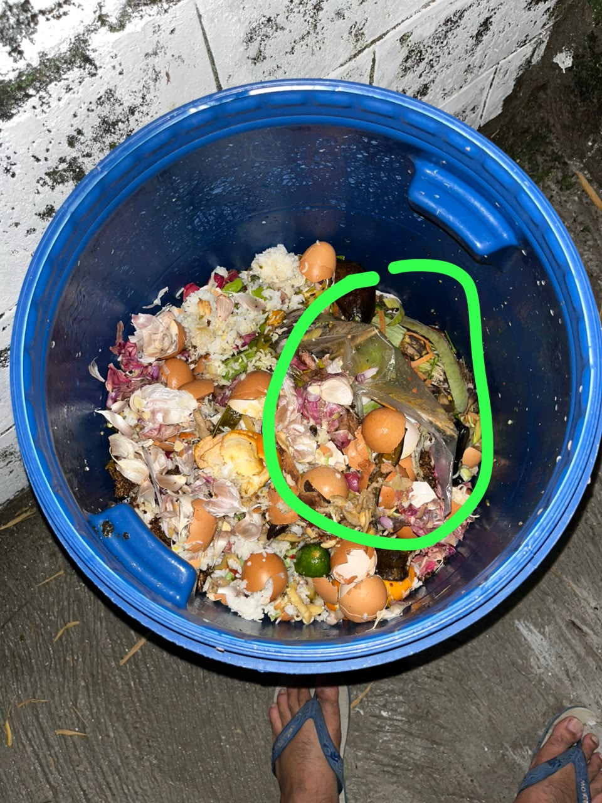

Panduan RT 001/04 Ciracas
Warna tong sampah di RT 001/04 Ciracas tidak sama dengan standar resmi DKI Jakarta. Patokan di lingkungan kita adalah label tulisan di tong, bukan warnanya.
| Jenis Sampah | Standar DKI | RT Kita |
|---|---|---|
| Organik | 🟢 Hijau | 🔵 Biru |
| Residu | 🟡 Kuning | 🟢 Hijau |
| Anorganik | 🔵 Biru | ❓ Belum diketahui |
| B3 | 🔴 Merah | ❓ Belum diketahui |
Jadwal Buang Sampah
Hari Selasa, Kamis, Sabtu → buang ke tong biru depan toko obat.
Hari lainnya → simpan dulu di rumah, kapasitas tong terbatas.
Tong Sampah Organik di RT Kita


Panduan Resmi Pemilahan Sampah DKI

Contoh Pembuangan yang Salah


Cara Buang Sampah B3
Kumpulkan sampah B3 dalam wadah tertutup berlabel B3.
Setor ke TPS Limbah B3 terdekat atau titipkan ke petugas Satpel Lingkungan Hidup Kecamatan Ciracas saat jadwal pengangkutan.
Contoh sampah B3: baterai, lampu neon/LED rusak, obat kadaluarsa, kaleng aerosol, pestisida, oli bekas, termometer air raksa.
Kode warna tempat sampah
3 langkah praktis di rumah
① Siapkan wadah
Sediakan minimal 2–4 kantong atau wadah berlabel: organik, anorganik, residu, dan B3. Bisa pakai ember bekas atau kantong kresek berwarna.
② Keringkan dulu
Bilas botol, kaleng, dan wadah plastik sebelum masuk tempat anorganik. Sampah basah merusak nilai daur ulang dan bikin bau.
③ Setor ke bank sampah
Kumpulkan sampah anorganik kering dan setor ke bank sampah terdekat. Bisa dapat poin atau uang cash, lumayan!